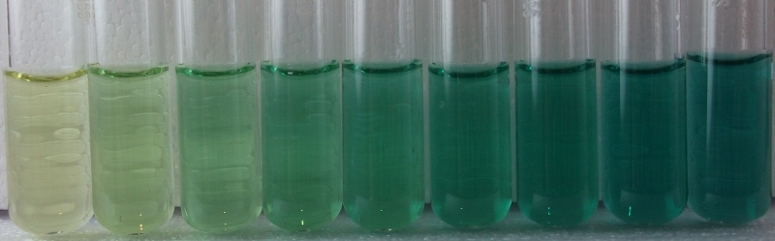

Salicylate Test¶

Reagents & Equipment¶
- Colorimeter
- Cuvettes with caps (preferably macro cuvettes)
- Sodium hydroxide, Carolina Biologicals # 889425
- 6% sodium hypochlorite (household bleach)
- Sodium salicylate, Sigma # S2679-100G
- Sodium nitroferricyanide, Sigma #228710-5G
- 1 mL pipette
- 2 x 100 mL volumetric flasks
- Distilled water
Colorimeter set-up¶
- Wavelength: 625 nm. Red led (colorimeter RGB board)
- Ammonia standard data: Low-range (0 - 2.5 ppm NH3). Download a data file or prepare your own ammonia standard data
- Before measuring blank the colorimeter against water or a distilled water sample developed with Salicylate reagents as described below
Method¶
Step 1: Prepare fresh reagents¶
Hypochlorite solution:
- Fill a 100 mL volumetric flask with 70 mL of DI water.
- Add 1 mL of bleach and 0.5 grams of NaOH and mix until dissolved.
- Fill flask to the 100 mL mark.
Salicylate/catalyst solution:
- Fill a 100 mL volumetric flask with 70 mL of DI water.
- Add 10 g of sodium salicylate, 0.04 g sodium nitroferricyanide and mix until dissolved.
- Add 0.5 g of NaOH to adjust pH to the ~12.0 range.
- Fill flask to the 100 mL mark.
- Transfer solution into a dark, airtight glass bottle for maximum longevity. Prepare fresh weekly due to limited storage life.
Step 2: Colorimetric assay¶
- Transfer 1 mL of each sample to be tested into a cuvette
- Add 0.25 mL of hypochlorite solution, cap cuvette and invert several times to mix
- Add 0.25 mL of salicylate/catalyst solution, cap cuvette and invert several times to mix
- Let tubes stand for 5-10 mins to develop color.
- Place the cuvette in the colorimeter and click measure. The program will return the ammonia concentration in ppm.